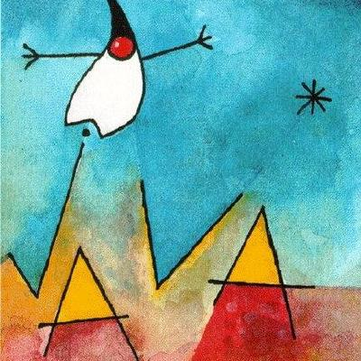
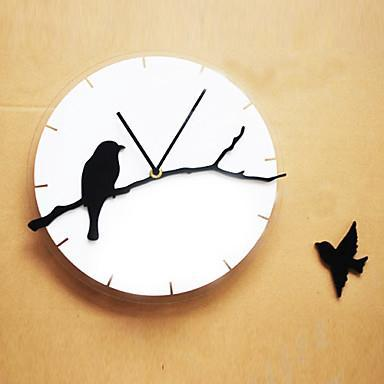
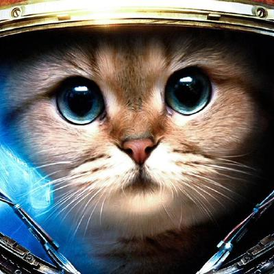

With the rapid development of the times of Internet information, the ways people get knowledge and information are increasingly diversified and convenient; in real life, when we have doubts and hence need help from other people, you’ll find, in most of the time, that people around you actually cannot timely answer your confusions/doubts, hence we’ll divert our attention to the Internet - the biggest open information platform - to seek help. Blogs, microblogs and all sorts of online forums are all good places where perception, knowledge and emotion can be exchanged among people; also, various group chat software/apps that exist can bring us experience of nearly real-time communication. In using the above various communication tools, however, we’ve also detected some problems:
1. Such ways of communication as blog, microblog and forum are not completely real-time because the posters have to wait for quite a long time before they get replies from other people.
2. Group chat tools can bring us experience of nearly real-time communication, but group chat is after all not a separate discussion tailored to a question raised by someone but filled with miscellaneous chats that can easily drown the messages of those who need help and answers to their doubts.
3. People lack motivation and enthusiasm to participate in and reply the questions and doubts of other people.
The emergence of the blockchain technology brings us new ways of thinking, new economic models and brand-new definitions of “value”. In response to the foregoing phenomena and in combination with the advantages of the blockchain technology, the AskCoin Project comes into being. The distributional consensus algorithm is POW + LIB(last irreversible block), which is secure in the cryptocurrency industry, is adopted for AskCoin. The POW algorithm, having been sufficiently verified in bitcoin, block interval is set to 10 sec, and 10 confirms reaches LIB. Moreover, AskCoin itself is a kind of cryptocurrency embedded in the system that drives the whole Q&A platform, and it stands for value too. As long as you are willing to help others answer their doubts, the askers’ll reward you; also, you may only reward certain replies that satisfy you separately, this is an innovation of AskCoin.
By the end of 2017, the Askcoin blockchain network will be officially launched, and mobile app will be officially launched; In 2018, our focus will be on the continuous improvement of product functions and the development of voting, election, monitoring and other functions on the block chain.

Gu Shui
Lin Wei
Xuan WangCopyright © Askcoin